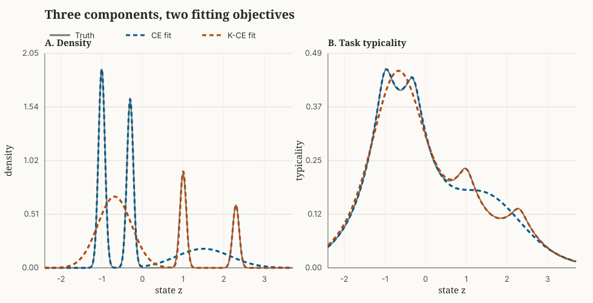

Setting
The previous feature-engineering essay is about transformations that preserve the distinctions in a task kernel. Here I will instead discuss fitting a model given a task kernel (e.g. in the output coordinates).
For a report $Q$, the kernel-smoothed mass around $z$ is its typicality
Ordinary cross-entropy fits the complete law with an implicit infinitely narrow identity kernel. When the corresponding entropy is concave, the scoring-rule essay derives the proper tangent score $S_K$ that also uses the kernel. Averaging over the true distribution, I will write its expected risk as
and call it $K$-cross-entropy, or $K$-CE. The score combines negative log typicality $-\log(KQ)(Z)$ with the tangent correction that makes it proper. With an identity kernel on a discrete space, $K$-CE is ordinary cross-entropy. On a continuous space, the fitted models approach the ordinary CE fit as an isotropic kernel bandwidth shrinks.
Where CE and K-CE disagree
If the model family $\mathcal Q$ contains $P$, both objectives agree. Ordinary CE is minimized at $P$, and proper $K$-CE is also minimized at $P$. The objectives can disagree when the model is restricted: perhaps the report has a fixed number of components, the model is regularized, or the data only support a small model. Then it has to choose which errors to make. CE will trade between those errors at exact local density resolution; $K$-CE discounts errors between similar outcomes.
Write ordinary cross-entropy as $\mathcal C_{\log}$. The two population projections of the same family are
I will compare their optimal models with both evaluations:
A positive $\Delta_K$ is the task-resolution gain from changing the fit. A positive $\Delta_{\log}$ is the full-density gain from fitting to regular CE. I report both in bits below.
Gaussian Mixture Examples
In contrast to the finite-sample Gaussian-mixture singularity in the scoring-rule essay which demonstrates the pathologies of infinite costs and rewards when fitting to sample data, the focus here is on the shape of the tradeoffs between different models to population distributions. Consider again a one-dimensional population with four narrow Gaussian modes:
The first two modes contain $70\%$ of the population and are relatively close. The two modes to their right are farther apart at the task scale. I express that scale with the one-dimensional Laplace kernel, one of the concave cases covered by the scoring rule,
I now fit $Q$ directly to the true density $P$ with only three Gaussian components, where each can have its own weight, mean, and width.
CE uses two components to reproduce the large nearby modes almost exactly, then spends its last component covering both modes on the right with one wide Gaussian centered near $1.50$. Broad-kernel $K$-CE makes the opposite tradeoff, using one wide component centered near $-0.68$ for the nearby pair.

Smoothing at the task scale reduces the importance of the valley within the left pair, so $K$-CE prioritizes fitting the more distinct regions to the right.
| Kernel and report family | Fit | $\Delta_K$ (bits) | $\Delta_{\log}$ (bits) |
|---|---|---|---|
| Narrow ($\ell=0.08$), 3 components | Almost identical models | $<0.001$ | $<0.001$ |
| Broad ($\ell=0.6$), 3 components | Different allocation | $0.021$ | $0.231$ |
| Broad ($\ell=0.6$), 4 components | Both recover $P$ | $0.000$ | $0.000$ |
With a narrow kernel, $K$-CE and CE spend the three components in essentially the same way, indicating that the more computationally simple CE is sufficient. With four components, the truth is in the model family and both objectives recover it exactly, so fitting with local CE is also preferred. The disagreement appears only when the kernel gives meaningful partial credit and the report is too small to fit everything.
CE vs. $K$-CE
For models that are expensive to fit, it seems reasonable to fit candidate models or model families by ordinary CE and compare their predictions with held-out $K$-CE when transported appropriately. This is because $\mathcal C_K$ supplies a common task-sensitive scale across models even when their native coordinates and ordinary cross-entropies differ. Evaluating the kernel score may still be expensive, but it avoids optimizing every model through the nonlocal objective.
The CE fit can also be a good starting point for direct $K$-CE fitting. If a promising model still has some task regret, one could initialize at the CE minimizer (equivalently, the likelihood maximizer) and fine-tune with $K$-CE. This concentrates the expensive part of the fitting procedure on models that already work reasonably well and lets us measure whether the task-aware adjustment is worth any extra computational cost.